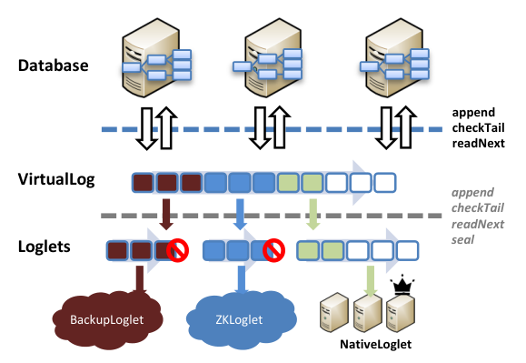
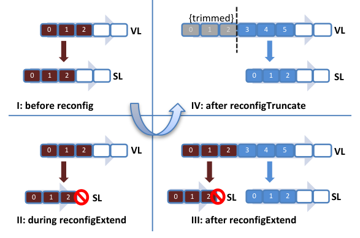
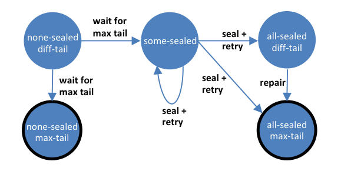
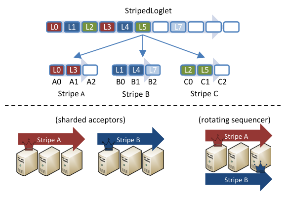
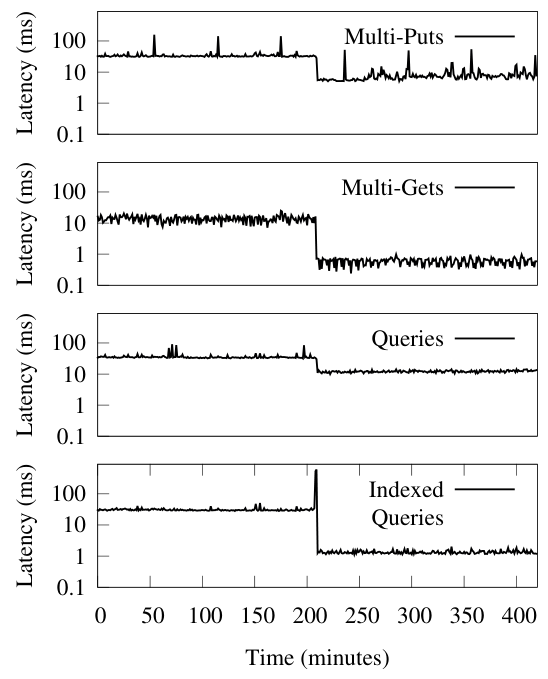
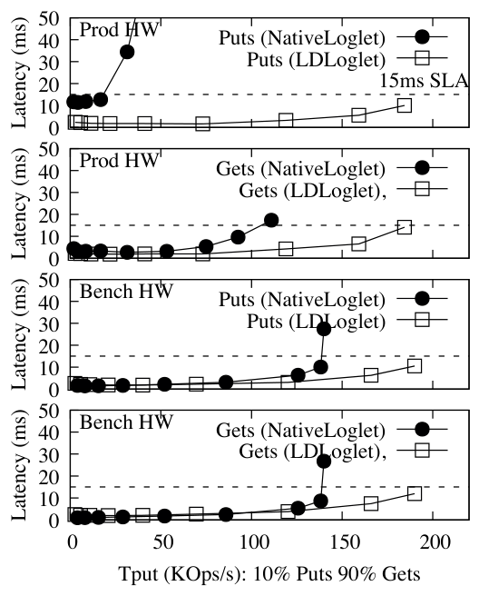
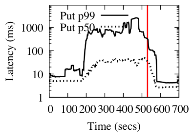
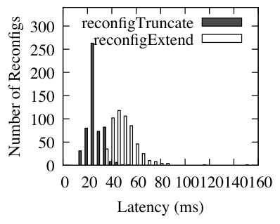

Virtual Consensus in Delos
This page was written by an AI model to give a high-level overview of the paper. Please check the paper for detail: USENIX.
Systems that replicate state with consensus are usually monolithic and hard to change. Once a team picks a protocol (ZAB for ZooKeeper, a decade-old Multi-Paxos variant) and ships it, that choice tends to stick for the system's lifetime: ZooKeeper still runs the same protocol it launched with. New consensus research rarely reaches production systems that are already deployed; instead, it only gets adopted when someone builds an entirely new system around it from scratch, such as CorfuDB around sharded acceptors or etcd around Raft. Facebook faced this problem concretely in 2017: it needed a new control-plane table store within 6 to 9 months, with guarantees that none of its four existing storage systems (ZooKeeper, a LogDevice-based shared log, ZippyDB, replicated MySQL) quite provided, and it needed to keep improving the system's performance afterward.
A shared log API (used by CORFU, Tango, LogDevice) already helps by hiding the ordering protocol behind data-centric calls like append and readNext. But the API alone does not solve the evolution problem. First, nothing lets an operator move a running system from one log implementation to another without downtime. Second, most consensus protocols tightly couple a data plane (the critical-path logic that orders commands) with a control plane (leader election, membership and reconfiguration): Raft, for instance, bakes reconfiguration into the same protocol that orders commands, so changing the ordering mechanism means rewriting the whole protocol.
The paper's idea is to virtualize the shared log API itself. A VirtualLog exposes the conventional shared log API to applications, but internally maps the virtual log's address space onto a chain of underlying Loglets: simple, swappable log implementations. The VirtualLog is the system's one required source of fault-tolerant consensus; it owns all leader election and reconfiguration logic, and that logic is written once and reused for every Loglet. A Loglet, in turn, does not need to implement fault-tolerant consensus or reconfiguration at all; it only needs to support ordinary appends plus one new, weaker primitive: a highly available seal that stops new appends from succeeding. This split lets Loglets be simple, diverse (different protocols, codebases, even different deployment modes) and composable.
Mechanically, the VirtualLog keeps a chain of Loglet segments, each covering a range of virtual log positions; only the last (active) segment accepts appends, and a durable, versioned MetaStore (itself a small Paxos-replicated register) stores the current chain. Reconfiguring to a new chain means sealing the old active Loglet, writing the new chain to the MetaStore with a conditional write, and having clients fetch it. Because the Loglet only has to support a trivial seal operation rather than full consensus, new Loglets are fast to build; the authors' NativeLoglet, a primary-driven log with no leader election, took under 4 months to implement and deploy.
The authors built this into Delos, a replicated database that has served Facebook's control plane for over 18 months at the time of writing and processes over 1.8 billion transactions per day across all deployments. Delos reached production in 8 months using a simple Loglet shim over ZooKeeper, then 4 months later switched online, with no downtime, to a custom NativeLoglet for a 10x reduction in end-to-end production latency. The paper also shows Delos scaling throughput up to 10x by switching to a disaggregated Loglet under a 15ms p99 SLA, and doubling its failure threshold without losing throughput using a composed StripedLoglet, which on a log-only workload supports over a million 1KB appends per second.

Key takeaways
- Virtualizing the shared log API splits consensus into a VirtualLog (a reusable control plane for reconfiguration and leader election) and Loglets (pluggable, simple data planes for ordering).
- A Loglet only needs a highly available seal, which is weaker than fault-tolerant consensus and much easier to implement than a highly available append.
- Reconfiguration is a generic, data-centric protocol against any Loglet and a MetaStore: seal the old active segment, write a new chain to the MetaStore, fetch it. It works across entirely different Loglet protocols, codebases and deployment modes.
- Loglets compose like RAID: a StripedLoglet shim (about 300 lines of code) turns existing Loglets into a rotating-sequencer or sharded-acceptor design without a new protocol.
- In production, Delos upgraded from a ZooKeeper-backed Loglet to a custom NativeLoglet without downtime for a 5 to 10x latency win, and virtualization itself costs only 100 to 150 µs p99 on append and checkTail, a few µs on readNext.
From a shared log API to a swappable consensus stack
Background, the coupling problem virtual consensus removes, the VirtualLog and Loglet abstractions, the NativeLoglet and StripedLoglet implementations, and how Delos is built on top.
1 · Background: the shared log as a consensus API
Before this paper, systems such as CORFU and Tango already used a shared log as a data-centric interface for consensus: applications append commands and read them back in a strongly consistent, totally ordered sequence, without needing to know which consensus protocol produces that order. The basic API has four calls: append, checkTail (first unwritten position), readNext (read a position in a given range) and prefixTrim (allow garbage collection of a prefix). This hides the protocol from the application, but on its own it gives no way to change the protocol underneath a running system, and no help building new, simple protocols.
2 · Why protocols on their own do not evolve
Two problems block incremental evolution of a deployed consensus-based system. First, operational: there is no supported way to move a live, highly available service from one log implementation to another without downtime. Second, structural: a consensus protocol typically combines a data plane (ordering commands on the critical path) with a control plane (leader election, membership changes, reconfiguration) into one design. Raft is the clearest example: its reconfiguration and leader election machinery is woven into the same protocol that orders commands, so replacing the ordering mechanism means redesigning the whole thing. ZooKeeper's ZAB has the same issue, which is part of why it has run essentially the same protocol for a decade.
3 · The VirtualLog and Loglet APIs
The paper's fix is to add virtualization at the shared log API itself. Two abstractions implement it:
- Loglet: a conventional shared log (
append,checkTail,readNext,prefixTrim) plus one new call,seal, which stops future appends from being acknowledged.checkTailis augmented to return a (tail position, sealed) pair instead of just a tail. - VirtualLog: implements the same API as a Loglet (so it looks like an ordinary shared log to applications) and adds three reconfiguration calls:
reconfigExtend(switch the active segment to a new Loglet),reconfigModify(change a sealed segment, for example to rebuild failed servers) andreconfigTruncate(drop the first sealed segment, used after a prefix trim).
Applications only ever talk to the VirtualLog and are oblivious to its internal structure.
4 · The VirtualLog's chain abstraction
Internally, the VirtualLog is a chain that maps ranges of its own virtual address space onto ranges of underlying Loglets, written as, for example, [0 →A 100 →B 150 →C •]: positions 0 to 99 map onto Loglet A's positions 0 to 99, 100 to 149 onto Loglet B's 0 to 49, and 150 onward onto Loglet C. Only the last segment in the chain, the active segment, accepts appends; every earlier segment is sealed. An append or checkTail on the VirtualLog is routed to the active segment with position translation; a readNext is routed to whichever segment covers that range.

Reconfiguring to a new chain means installing a new active segment (reconfigExtend), changing a sealed segment in place (reconfigModify), or dropping the oldest sealed segment (reconfigTruncate). Only the first case needs the old chain to be sealed first, since it is the only one that can remap an unwritten address to a different Loglet; modifying or truncating a sealed segment does not move any unwritten address, so it can happen concurrently with appends at the tail.
5 · The reconfiguration protocol
A reconfiguration from chain Ci to Ci+1 runs in three data-centric steps, expressed purely as calls on Loglets and the MetaStore, with no assumptions about either's internals:
- Seal the current chain by calling
sealon its active segment (seals are idempotent, so multiple clients can race to do this safely), thencheckTailto find where the new segment should start. - Install the new chain by writing Ci+1 to the MetaStore with a conditional write that only succeeds if the MetaStore still holds Ci. Multiple reconfiguring clients may race here; at most one wins.
- Fetch the latest chain from the MetaStore, needed only if the client's own write in step 2 lost the race.
Concurrency and failure handling follow directly from this protocol. A client still operating on a stale, sealed chain gets a sealed error on append, or a sealed bit back from checkTail, and re-fetches the chain. If the client that sealed the old chain crashes before installing a new one, any other client can, after a timeout, roll the reconfiguration forward by installing a default chain cloned from the old active segment's configuration. Reconfigurations are triggered by three sources in practice: operators running planned upgrades, the VirtualLog itself after a prefix trim empties a sealed segment, and Loglets that detect their own failures (such as a dead sequencer) and call reconfigExtend on themselves.
6 · Why a separate MetaStore
The chain could in principle be stored inline inside the active Loglet, as some reconfigurable systems do, but that would require every Loglet to be highly available for writes, that is, to implement fault-tolerant consensus itself. Using a separate MetaStore, a single versioned register with a conditional write, moves that requirement entirely out of the Loglet and into one reusable component, implemented once as a sequence of simple, unoptimized single-slot Paxos instances (Lamport's original replicated-state-machine construction). Because the MetaStore is touched only during reconfiguration, it does not need to be fast: reconfiguration latency in Delos's single-data-center deployment is on the order of tens of milliseconds, comfortably below failure-detection timescales.
7 · The Loglet abstraction: a seal is not consensus
A Loglet needs only to provide totally ordered, durable storage within a static configuration, plus a seal that is highly available. The paper notes that a seal bit is a weaker data type than consensus: unlike a write-once register, only one value (set) can ever be proposed, and unlike a sticky bit it has just two states rather than three; it can be built from a plain fault-tolerant atomic register and is not subject to the FLP impossibility result. Because seal semantics are deliberately weak (an append that is rejected by a sealed Loglet may still become durable later through repair, a "zombie" append that is invisible to the VirtualLog because it falls outside the mapped range), a Loglet does not need leader election to support it, only a majority-based mechanism.
8 · NativeLoglet: a Loglet without consensus
NativeLoglet is Delos's own Loglet, demonstrating how simple a Loglet can be. Each Delos server runs a NativeLoglet client and a LogServer; one server also runs a sequencer. append requests go to the sequencer, which assigns positions and forwards them to all LogServers, acknowledging once a majority of unsealed LogServers confirm. seal just sets a bit on a majority of LogServers. checkTail follows a small state machine over the (tail, sealed) replies from a majority of LogServers:

- all-sealed: every responding LogServer is sealed; if their local tails differ, the client repairs them to the maximum tail before returning it.
- some-sealed: a mix of sealed and unsealed replies; the client issues its own seal and retries.
- none-sealed: no LogServer is sealed; the client waits for its own view of the tail to reach the maximum reported position, watching for a seal to appear in the meantime.
NativeLoglet becomes unavailable for appends if the sequencer fails; it is not required to tolerate that, since the VirtualLog's reconfiguration mechanism handles it. On a sequencer or LogServer failure, NativeLoglet detects it (via in-band signals or an out-of-band failure detector) and calls reconfigExtend on the VirtualLog, supplying a fresh set of LogServers and a sequencer; the VirtualLog seals the old NativeLoglet and switches over.
9 · StripedLoglet: composing Loglets like RAID
StripedLoglet is a thin shim, about 300 lines of code, that stripes a logical address space round-robin across several underlying Loglets (position L0 to stripe A, L1 to stripe B, L2 to stripe C, L3 back to A, and so on). It only acknowledges an append once every earlier logical position across all stripes is filled, which preserves linearizability.

The same code supports two different uses, depending only on how the underlying Loglets are configured:
- Rotating sequencer: stripes are NativeLoglets that share the same set of LogServers but have different sequencers, spreading out the cost of a single sequencer having to replicate every entry to every server.
- Sharded acceptors: stripes are entirely disjoint Loglets (possibly different types), giving linear throughput scaling similar to CORFU or Scalog, but without a centralized sequencer or separate ordering layer.
To the VirtualLog, a StripedLoglet is just another Loglet: it is sealed as a whole, even if only one stripe actually needs to change. Results for both uses are in the Evaluation tab.
10 · Delos: layering the database on top
Delos itself is a replicated, strictly serializable ACID database, architecturally similar to Tango: each server keeps local state in RocksDB and replays commands from the VirtualLog to stay in sync, appending write transactions without executing them locally first and executing them only when they appear in the log. Each server is organized in three layers: an API-specific wrapper on top (a Table API is in production; a ZooKeeper-compatible API was being developed), a common Core that exposes a state-machine-replication interface and talks to the VirtualLog, and the VirtualLog and Loglets underneath. The MetaStore started out on an external ZooKeeper service and was later replaced by an embedded version running on the same servers as Delos itself. In production, Delos runs two Loglets, ZKLoglet (a shim over ZooKeeper) and NativeLoglet; the evaluation also exercises LogDeviceLoglet (a pass-through to a LogDevice service) and StripedLoglet. Results from this stack are covered in the Evaluation tab.
Evaluation
Production measurements from live Delos deployments, plus controlled experiments on dedicated hardware.
The paper evaluates Delos on two hardware setups and two workloads. Production hardware is 5 servers with shared boot SSDs, matching most live Delos instances; benchmark hardware adds dedicated NVMe SSDs. All runs use Twine containers with production-grade logging and monitoring. All latency numbers are p99 over 1-minute windows against a 15ms p99 SLA, matching Delos's production requirement.
| What | Value in the paper |
|---|---|
| Hardware | Production HW: 5 servers, shared boot SSDs. Benchmark HW: dedicated NVMe SSDs |
| Production workload | 425 queries/sec, 150 puts/sec on the Table API; writes median 500 B, max 150 KB; 1 to 10 GB per deployment |
| Synthetic workload | Single-key puts/gets, 1 KB value, 10M-key uniform random keyspace, pre-loaded to 10 GB |
| Loglets compared | ZKLoglet, NativeLoglet, LogDeviceLoglet (LDLoglet), StripedLoglet; baseline comparison against raw ZooKeeper |
| Metric | p99 latency over 1-minute windows; 15ms p99 SLA |
A live production upgrade from ZKLoglet to NativeLoglet, with no downtime

What it shows. Four log-scale p99 latency plots (multi-puts, multi-gets, queries, indexed queries) over time on a production Delos instance, during an actual switch-over from ZKLoglet to a converged NativeLoglet on April 2, 2019. Multi-gets and indexed queries improve 10x; multi-puts improve 5x. Two reconfigurations are visible: a reconfigExtend that seals ZKLoglet and activates NativeLoglet, causing the visible latency drop, and a later reconfigTruncate that removes the old ZKLoglet segment without needing a seal and without any visible disruption. Indexed-query p99 spikes briefly during the reconfiguration itself, but the service stays available throughout. Hourly spikes in multi-put latency come from periodic large application writes, unrelated to the Loglet switch.
What to take from it. Virtual consensus let Delos change its entire consensus implementation under a live production workload with no downtime. Most of the latency win comes from ZKLoglet's simplicity (it writes one new sequential ZooKeeper key per append), so the comparison is specific to that pairing rather than a general claim about ZooKeeper-based logs.
Switching to a disaggregated Loglet scales throughput 10x (production HW) or 33% (benchmark HW)

What it shows. Throughput-vs-p99-latency curves for a 90% get / 10% put synthetic workload, comparing converged NativeLoglet against disaggregated LDLoglet, on production HW (top two panels) and benchmark HW (bottom two panels). On production HW, NativeLoglet's put latency starts rising at 15K ops/s due to contention between the Loglet and the database sharing SSDs; LDLoglet, running on 5 separate machines with dedicated NVMe SSDs, reaches 150K ops/s, a 10x improvement, without breaching the 15ms p99 SLA. On benchmark HW, where there are more IOPS to share, NativeLoglet's latency rises for both puts and gets around 139K ops/s, while LDLoglet reaches 190K ops/s, a 33% improvement.
What to take from it. The size of the throughput gain from disaggregation depends heavily on how I/O-constrained the converged deployment already is: the win is far larger on shared, contended production hardware than on dedicated benchmark hardware. The paper notes similar results with a disaggregated NativeLoglet instead of LDLoglet, but reports LDLoglet numbers to highlight Delos running over a different Loglet type.
Dynamic switching absorbs a workload spike; StripedLoglet relieves sequencer and acceptor bottlenecks

What it shows. Three experiments on one figure. Left: on production HW, a workload starting at 100 puts/sec (meeting the 15ms SLA on NativeLoglet) jumps to 2500 puts/sec at 180 seconds; NativeLoglet's p99 degrades past 1 second from SSD contention, and reconfiguring to LDLoglet at around 530 seconds brings p99 back under 15ms (after a roughly 60-second lag from the 1-minute sliding window). Middle: with 9 LogServers for higher fault tolerance, a plain NativeLoglet bottlenecks on its single sequencer, which must send every entry 8 times; a StripedLoglet built from 2 NativeLoglets sharing the same LogServers but different sequencers runs 25% faster on benchmark HW. Right: a StripedLoglet over multiple 3-node NativeLoglets, appended to by 20 clients with 1 KB payloads, scales linearly from 1 stripe (3 LogServers) to 30 stripes (90 LogServers) before the clients themselves become the bottleneck; with shared NVMe SSDs providing 30K IOPS at 75ms p99, the paper reports maximum throughput under a 75ms p99 bound, and separately notes 750K 4 KB appends/s at 30 shards, which it states is the highest reported single-log throughput in a non-emulated experiment, ahead of CORFU's 570K/s and Scalog's 255K/s.
What to take from it. The same generic VirtualLog mechanism supports three different kinds of adaptation: reacting to a workload shift by changing deployment mode, relieving a sequencer bottleneck by rotating sequencers across stripes, and scaling append throughput by sharding acceptors, all via the same roughly 300-line StripedLoglet shim rather than three separate protocols. The paper notes Delos itself cannot yet exploit the full 750K/s log throughput because it bottlenecks on log playback, and leaves selective playback for future work.
Virtualization costs little: microseconds on the data path, milliseconds on reconfiguration, and performance on par with raw ZooKeeper

What it shows. Three measurements. Left: over a 1-hour window on a production cluster running NativeLoglet, the VirtualLog adds 100 to 150 µs of p99 latency to append and checkTail (attributed to an asynchronous Future-based API), while readNext, a synchronous pass-through, adds only about 6 µs. Middle: a histogram of all reconfigurations across production clusters over one month shows latencies in the tens of milliseconds, with reconfigTruncate (no seal needed) faster than reconfigExtend; most reconfigurations are triggered by routine software deployment and machine preemption rather than actual failures, and one production cluster saw 98 reconfigurations in the month. Right: on benchmark HW with a 1 GB database (to fit ZooKeeper's practical limit), raw ZooKeeper sustains over 30K SetData/sec before p99 passes 15ms, Delos+NativeLoglet sustains about 26K puts/sec, and an in-memory variant of Delos reaches 40K puts/sec; the gap to ZooKeeper is attributed to ZooKeeper keeping materialized state in memory versus Delos's RocksDB-backed state, and Delos's 100 GB curve (not shown) is nearly identical to its 1 GB curve.
What to take from it. Virtualization's cost is concentrated in a small, fixed per-call overhead and an occasional tens-of-milliseconds reconfiguration, not in steady-state throughput: an apples-to-apples comparison puts Delos+NativeLoglet within range of unvirtualized ZooKeeper, and Delos's RocksDB-backed design (rather than virtualization itself) explains most of the remaining gap, while also giving it headroom to scale to much larger databases than ZooKeeper can hold.
FAQ
Q·What does "virtual consensus" actually mean here?▾
It means virtualizing the shared log API that sits in front of a consensus protocol. Applications talk to a VirtualLog that looks like an ordinary shared log, but underneath, the VirtualLog can remap itself onto different underlying log implementations (Loglets) over time, including switching protocol, codebase, or deployment mode, without the application noticing or any downtime.
Q·How is this different from just using an existing shared log like CORFU or LogDevice directly?▾
Those systems expose a shared log API, but they are each a single, fixed implementation: once you build on CORFU, you are tied to CORFU's protocol and deployment model. The VirtualLog adds a layer that can swap out the underlying implementation live, and it lets Loglets be far simpler than CORFU's acceptors because a Loglet does not need to be highly available for appends, only for seal.
Q·What exactly does a Loglet have to implement, and what can it skip?▾
It must implement append, checkTail, readNext and prefixTrim like a normal shared log, plus a highly available seal. It does not need leader election, membership changes, or any form of reconfiguration; those are all handled once, generically, by the VirtualLog.
Q·Why is a seal operation easier to make highly available than an append?▾
A seal only ever has one outcome to agree on (it gets set), so the paper argues it is a weaker data type than general consensus, comparable to a write-once register, and buildable from a plain fault-tolerant atomic register rather than requiring the full machinery (and impossibility results) that apply to consensus with arbitrary proposed values.
Q·Where does the chain of Loglets live, and why not store it inside the Loglet itself?▾
It lives in a separate MetaStore: a single versioned register with a conditional write, itself replicated with a simple Paxos-based protocol. Storing the chain inside the active Loglet instead would require every Loglet to support highly available writes, defeating the goal of keeping Loglets simple.
Q·What happens to the old Loglet during a reconfiguration?▾
It gets sealed, which stops new appends from being acknowledged, though in-flight appends can still complete on it afterward; these become "zombie" appends that are invisible to the VirtualLog because the new chain no longer maps any virtual address to that range. The old segment is removed later via a separate, non-disruptive truncation step.
Q·How does the system stay linearizable while all this reconfiguration happens?▾
Any client still using a stale chain gets an explicit signal, a sealed error on append or a sealed bit on checkTail, that tells it to fetch the current chain before proceeding. Because only an active chain accepts new appends and any conflicting reconfiguration seals it first, clients can never silently diverge on where the "true" tail is.
Q·What is NativeLoglet and why doesn't it do leader election?▾
NativeLoglet is Delos's own Loglet: a sequencer assigns append positions and a set of LogServers durably store them. It becomes unavailable for appends if the sequencer dies, which is acceptable because the VirtualLog's generic reconfiguration mechanism is what recovers from that, by sealing the old NativeLoglet and installing a new one with a fresh sequencer.
Q·How does StripedLoglet get more throughput without a central sequencer?▾
It stripes append positions round-robin across several independent underlying Loglets and only acknowledges an append once every earlier logical position, across all stripes, has been filled. Routing each append to a different stripe spreads load; depending on how the stripes are configured, this either rotates the sequencing bottleneck across several sequencers or shards the log across disjoint sets of acceptors entirely.
Q·What were the concrete production results of switching Loglets?▾
Delos went live in 8 months with a ZooKeeper-backed Loglet, then switched online 4 months later to a custom NativeLoglet, cutting p99 latency 5 to 10x across different operation types with no downtime during the switch.
Q·Does virtualization cost anything in practice?▾
Yes, but it is small: 100 to 150 µs of added p99 latency on append and checkTail from an async API layer, about 6 µs on readNext, and reconfigurations that complete in tens of milliseconds. The paper also shows Delos+NativeLoglet throughput close to raw ZooKeeper on the same hardware.
Q·What operational benefits beyond raw performance did virtual consensus give Facebook?▾
The paper describes temporarily reconfiguring to a disaggregated Loglet to decouple a fragile, frequently-updated database layer from a more fault-tolerant log layer during risky periods, deleting or remapping a "poison" log entry by editing VirtualLog metadata instead of the log itself, and running an experimental ZooKeeper-compatible API over a VirtualLog that is itself backed by a ZooKeeper-based ZKLoglet.
Q·What can't virtual consensus (as described here) do?▾
It only virtualizes a shared log API that captures a total order of commands, so it does not support protocols that build partial orders from operation commutativity, such as Egalitarian Paxos–style designs; the paper mentions extending virtual consensus to partially ordered logs as future work. Switching between converged and disaggregated modes is also a manual, operator-driven decision in the system described, not automated.